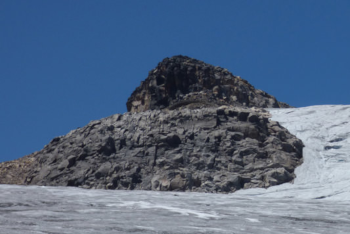
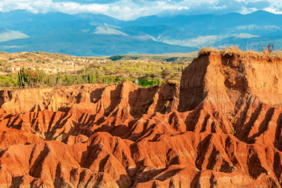
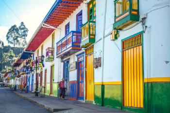

Increibles caminatas en el interior del Valle del Cocora
Capurgana Increibles

Sorprendente aventura en el Nevado Santa Isabel

Impresionantes contrastes en el desierto de La Tatacoa

La cultura cafetera en SalentoCapurgana IncreiblesSorprendente aventura en el Nevado Santa IsabelImpresionantes contrastes en el desierto de La TatacoaLa cultura cafetera en Salento